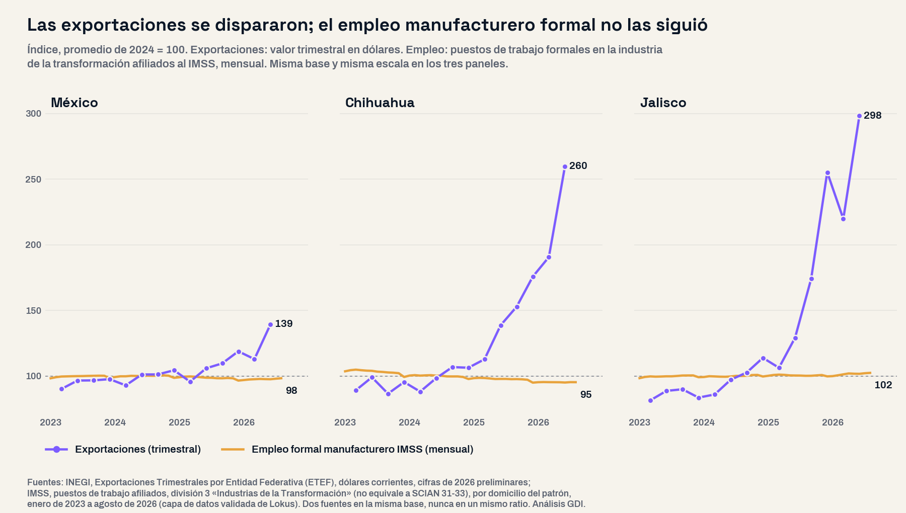
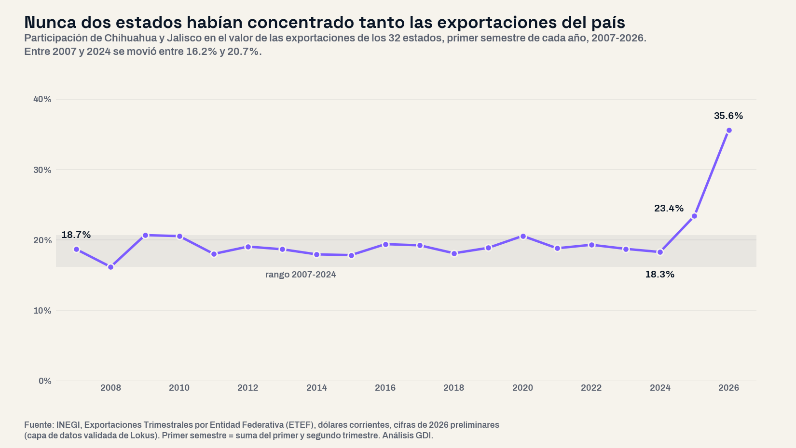

El 30 de septiembre el INEGI publicó las Exportaciones Trimestrales por Entidad Federativa (ETEF) del segundo trimestre de 2026: los estados vendieron al resto del mundo mercancías por 195,260.7 millones de dólares, 31.6% más que un año antes. La pregunta de este análisis fue abierta: ¿qué estados sostuvieron ese crecimiento, cuáles se quedaron fuera y qué pasó con el empleo y la actividad industrial donde las exportaciones crecieron? Se ordenaron los 32 estados por el cambio de su valor exportado en el primer semestre, sin preseleccionar regiones, y se cruzaron, como columnas separadas y nunca en un mismo indicador, con el empleo formal del IMSS, el indicador trimestral de actividad del INEGI y el Censo Económico 2024.
Una precisión de método. La ETEF mide en dólares corrientes el valor de las mercancías que salen del país y las asigna al estado donde está la planta. No incluye comercio ni servicios, por eso su total es menor que el de la balanza comercial, que registró 389,723 millones de dólares exportados entre enero y junio (24.6% más). Tampoco mide cuánto valor se agrega en el estado ni cuánta gente trabaja en ello: para eso están las otras fuentes.
25% más en un semestre, y casi todo de una sola rama
Entre enero y junio de 2026 los estados exportaron 353,378 millones de dólares, contra 282,406 millones en el mismo periodo de 2025: 70,972 millones más (+25.1%), el primer semestre más alto de la serie, que inicia en 2007. El ritmo se aceleró trimestre a trimestre: 8.3% anual en el tercer trimestre de 2025, 13.8% en el cuarto, 17.9% en el primero de 2026 y 31.6% en el segundo.
El aumento tiene una fuente casi única. La fabricación de equipo de computación, comunicación, medición y otros electrónicos (SCIAN 334) pasó de 57,004 a 120,541 millones de dólares en el semestre (+111.5%) y explica 89.5% del aumento nacional. Por primera vez desde 2009 esa rama exporta más que el equipo de transporte (SCIAN 336), cuyas ventas quedaron prácticamente iguales: 104,780 millones, 0.4% más que en 2025. Sin la rama 334, las exportaciones del país crecieron 3.3%.

Dos estados, 84 de cada 100 dólares nuevos
Chihuahua sumó 37,536 millones de dólares de exportaciones en el semestre (+79.1%) y Jalisco 22,331 millones (+119.9%): juntos explican 84.4% del aumento nacional. Los otros 30 estados crecieron 5.1% en conjunto y diez exportaron menos que en 2025: Aguascalientes, Veracruz, Chiapas, Estado de México, Tamaulipas, Campeche, Ciudad de México, Michoacán, Hidalgo y Morelos, que tuvo la mayor caída (−42.4%).
Los boletines del INEGI, que publican el desglose por rama de los principales estados, muestran que la rama 334 representó 75.0% de lo que exportó Chihuahua en el semestre y 81.5% de lo que exportó Jalisco; entre los dos venden 80.6% de toda la electrónica que exporta el país. El Censo Económico 2024, que mide la actividad de 2023, ubica ahí a la industria: Jalisco genera 25.5% de la producción nacional de la rama y Chihuahua 17.0%, y Chihuahua es el estado con más personal ocupado en ella (110,349 personas). Por municipio, Juárez encabeza con 85,515 personas, seguido de Tijuana, Reynosa y Zapopan.
Alerta: la mayor concentración exportadora registrada
Entre 2007 y 2024, Chihuahua y Jalisco sumaron entre 16.2% y 20.7% de las exportaciones de cada primer semestre; en 2025 llegaron a 23.4% y en 2026 a 35.6%. En ningún primer semestre desde 2007 los dos estados más exportadores habían concentrado más de 28.2%. Los cinco primeros, Chihuahua, Jalisco, Nuevo León, Coahuila y Baja California, suman 62.2%, cuando el máximo anterior era 55.2%. Jalisco pasó del sexto al segundo lugar nacional; en toda la serie nunca había estado arriba del sexto. Para los dos estados es una dependencia sectorial que debe vigilarse: tres de cada cuatro dólares que exporta Chihuahua, y cuatro de cada cinco de Jalisco, salen de una sola rama industrial.

Exportar más no fue emplear más
El empleo formal no acompañó el crecimiento. En agosto de 2026 el IMSS registraba 5,960,599 puestos de trabajo en la industria de la transformación, 205 menos que en agosto de 2025 y 112,647 menos que en agosto de 2024, mientras el empleo formal total del país crecía 1.5%. En junio, el mes que cierra el semestre, la diferencia anual era de 70,016 puestos menos. En 20 de los 32 estados el empleo formal manufacturero bajó en el último año.
En los dos estados del auge la distancia es mayor. Chihuahua exportó 79.1% más y perdió 11,271 puestos formales manufactureros (−2.3%); Jalisco exportó 119.9% más y sumó 11,590 (+2.2%). El indicador trimestral de la actividad económica estatal (ITAEE) del INEGI, que mide volumen de producción, registró en el primer trimestre de 2026 una caída de la actividad manufacturera de 1.5% en Chihuahua y de 3.4% en Jalisco frente al mismo trimestre de 2025, el mismo periodo en que sus exportaciones subieron 69.0% y 106.6%. El estado que más empleo manufacturero formal sumó fue Nuevo León (+23,608 puestos), con exportaciones 18.2% mayores.
El caso más claro es Juárez, Chihuahua. Es el municipio con más personal ocupado en la rama de computación y electrónica del país, y de los 1,447 municipios con registro en el IMSS en ambos meses fue el que más empleo formal manufacturero perdió entre agosto de 2025 y agosto de 2026: 13,079 puestos menos (−4.3%), de 303,213 a 290,134. Le siguen Ramos Arizpe (−4,715), Matamoros (−4,592) y Tijuana (−4,269). En Jalisco el mapa es mixto: Zapopan sumó 4,858 puestos manufactureros y El Salto 3,344, mientras Guadalajara perdió 3,614.
Las tres fuentes miden cosas distintas y no se combinan en un mismo indicador: la ETEF registra el valor en dólares de lo que se vende al exterior, el ITAEE el volumen de producción y el IMSS los puestos formales por domicilio del patrón. Pero coinciden en lo esencial: el valor exportado creció mucho más que la actividad y el empleo industrial de los estados que lo generaron. Ya habíamos documentado que casi la mitad de la economía de Chihuahua depende de la manufactura; hoy esa manufactura exporta más y emplea menos.
| Estado | Exportaciones 1S2026 (millones de dólares) | Cambio vs 1S2025 | Participación nacional | Empleo formal manufacturero IMSS, ago-2026 | Cambio vs ago-2025 (puestos) | Actividad manufacturera 2026T1 (ITAEE) |
|---|---|---|---|---|---|---|
| Jalisco | 40,963 | +119.9% | 11.6% | 533,785 | +11,590 | −3.4% |
| Guerrero | 976 | +87.7% | 0.3% | 6,908 | −585 | −2.7% |
| Chihuahua | 85,014 | +79.1% | 24.1% | 470,066 | −11,271 | −1.5% |
| Quintana Roo | 16 | +69.8% | 0.0% | 15,310 | +1,612 | +2.3% |
| Colima | 1,436 | +54.5% | 0.4% | 15,130 | +600 | −1.5% |
| Zacatecas | 3,178 | +32.3% | 0.9% | 39,549 | +2,379 | −2.7% |
| Puebla | 8,943 | +21.7% | 2.5% | 187,148 | −1,593 | +8.0% |
| Nuevo León | 33,071 | +18.2% | 9.4% | 686,985 | +23,608 | −1.3% |
| Durango | 1,649 | +15.8% | 0.5% | 88,116 | +1,937 | −0.8% |
| Yucatán | 1,339 | +14.9% | 0.4% | 83,050 | −3,009 | −1.9% |
| Querétaro | 9,966 | +13.3% | 2.8% | 249,216 | −836 | −5.3% |
| Nayarit | 198 | +10.9% | 0.1% | 19,092 | +1,189 | −3.0% |
| Baja California | 27,864 | +5.8% | 7.9% | 430,785 | −4,057 | −7.8% |
| San Luis Potosí | 13,162 | +5.6% | 3.7% | 199,120 | −1,679 | −4.6% |
| Oaxaca | 741 | +4.9% | 0.2% | 16,490 | +78 | −4.8% |
| Guanajuato | 20,184 | +4.5% | 5.7% | 458,459 | −5,840 | −1.0% |
| Sonora | 15,174 | +4.4% | 4.3% | 185,818 | −828 | +1.6% |
| Tlaxcala | 1,054 | +3.9% | 0.3% | 53,929 | −3,084 | −2.2% |
| Baja California Sur | 190 | +2.7% | 0.1% | 9,799 | −176 | −0.3% |
| Coahuila | 32,856 | +2.1% | 9.3% | 405,568 | −6,054 | −9.8% |
| Sinaloa | 2,058 | +0.9% | 0.6% | 85,565 | −646 | +2.1% |
| Tabasco | 3,168 | +0.2% | 0.9% | 15,608 | −327 | +78.6% |
| Aguascalientes | 6,685 | −0.4% | 1.9% | 131,157 | −3,863 | −5.4% |
| Veracruz | 3,648 | −2.3% | 1.0% | 94,205 | +254 | +0.9% |
| Chiapas | 725 | −2.3% | 0.2% | 29,139 | +1,145 | +2.0% |
| Estado de México | 10,719 | −3.6% | 3.0% | 579,985 | −6,817 | −4.3% |
| Tamaulipas | 17,062 | −5.3% | 4.8% | 279,569 | −6,958 | +3.6% |
| Campeche | 4,336 | −5.5% | 1.2% | 12,016 | −359 | −1.8% |
| Ciudad de México | 1,453 | −9.5% | 0.4% | 379,303 | +17,907 | −3.0% |
| Michoacán | 3,193 | −12.8% | 0.9% | 78,436 | −34 | −1.9% |
| Hidalgo | 1,285 | −17.7% | 0.4% | 82,091 | +276 | +7.9% |
| Morelos | 1,070 | −42.4% | 0.3% | 39,202 | −4,764 | −12.5% |
Implicaciones para la gestión pública
1. El valor exportado no es un indicador de bienestar local. Un informe de gobierno que presente el récord exportador como prueba de desarrollo debe acompañarlo del empleo formal y de la actividad del mismo periodo. En Chihuahua, el estado que más exportó, la manufactura formal tiene hoy 11,271 puestos menos que hace un año. Nuestra guía del plan municipal de desarrollo parte de ese principio: el diagnóstico se construye con varias fuentes oficiales del propio territorio, no con un solo indicador.
2. Medir la dependencia de una sola rama. Con 75% y 82% de sus exportaciones en electrónica, Chihuahua y Jalisco quedan expuestos a lo que ocurra con la demanda de esos productos. Los planes estatales de desarrollo deberían incluir un indicador de concentración exportadora y metas de diversificación de su base industrial.
3. Juárez necesita un diagnóstico laboral propio. Es el municipio con mayor pérdida de empleo manufacturero formal del país en un año de exportaciones récord de su estado. Vinculación entre la industria que crece y la población que pierde su puesto, capacitación y seguimiento mensual con el registro del IMSS son decisiones del gobierno municipal y del estatal.
4. Los estados que quedaron fuera. Diez estados exportaron menos y los principales exportadores de equipo de transporte crecieron poco o cayeron: Coahuila +2.1%, Guanajuato +4.5%, San Luis Potosí +5.6%, Aguascalientes −0.4% y Tamaulipas −5.3%. En Morelos la caída de 42.4% coincide con 4,764 puestos manufactureros formales menos (−10.8%). Para estos gobiernos, el auge nacional no es su realidad.
Conclusión
Las exportaciones de 2026 baten récords, pero el récord tiene dirección y nombre: Chihuahua, Jalisco y la rama de computación y electrónica. Fuera de esa rama el país exportó 3.3% más; fuera de esos dos estados, 5.1%; y la manufactura formal no sumó un solo puesto en el año. Para un gobierno estatal o municipal, la pregunta útil no es cuánto exporta su territorio, sino cuánto de eso se convierte en empleo y en actividad local, y qué tan expuesto queda si una sola rama se detiene.
¿Cuánto exporta tu estado y cuánto empleo formal genera?
En la plataforma de GDI puedes consultar las exportaciones trimestrales de tu estado desde 2007, el empleo formal del IMSS de cada municipio mes a mes, el indicador trimestral de actividad y el Censo Económico, para diagnosticar tu territorio con fuentes oficiales integradas.
Explorar mi territorioPreguntas frecuentes
¿Cuánto exportaron los estados de México en el primer semestre de 2026?
353,378 millones de dólares, 25.1% más que en el primer semestre de 2025, según la ETEF del INEGI. Solo en el segundo trimestre fueron 195,260.7 millones, 31.6% más que un año antes.
¿Qué estados exportan más en 2026?
En el primer semestre: Chihuahua (85,014 millones de dólares, 24.1% del total), Jalisco (40,963, 11.6%), Nuevo León (33,071, 9.4%), Coahuila (32,856, 9.3%) y Baja California (27,864, 7.9%).
¿Por qué crecieron tanto las exportaciones de Chihuahua y Jalisco?
Por la rama de equipo de computación, comunicación y electrónicos (SCIAN 334), que en el semestre representó 75.0% de lo exportado por Chihuahua y 81.5% de lo exportado por Jalisco, según los boletines del INEGI. A nivel nacional esa rama creció 111.5% y explica 89.5% del aumento.
¿Creció el empleo manufacturero con las exportaciones?
No. En agosto de 2026 el IMSS registró 5,960,599 puestos formales en la industria de la transformación, 205 menos que un año antes. Chihuahua perdió 11,271 y Juárez 13,079, la mayor caída municipal del país; Jalisco sumó 11,590.
Datos técnicos
Fuentes: INEGI, Exportaciones Trimestrales por Entidad Federativa (ETEF), 2007 al segundo trimestre de 2026, dólares corrientes, cifras de 2026 preliminares (edición del 4 de octubre de 2026); INEGI, boletines de la ETEF 406/26 y 609/26 (desglose de la rama 334 por estado, cuadro 4); INEGI, Balanza Comercial de Mercancías de México, junio de 2026; IMSS, puestos de trabajo afiliados, división 3 «Industrias de la Transformación», agosto de 2024, junio y agosto de 2025 y de 2026, por estado (agosto de 2025 y 2026 por municipio); INEGI, Indicador Trimestral de la Actividad Económica Estatal (ITAEE), serie original, primer trimestre de 2026; INEGI, Censos Económicos 2024 (año de referencia 2023), rama 334 por estado y municipio. Consultadas en la capa de datos validada de Lokus, salvo los boletines.
Método: universo completo de 32 estados ordenado por el cambio del valor exportado entre el primer semestre de 2025 y el de 2026 (suma del primer y segundo trimestre). La contribución de cada estado y de cada rama se calcula sobre el aumento nacional. La participación de la rama 334 en cada estado suma los dos trimestres publicados en los boletines. Los 32 estados de la capa de datos se cotejaron uno por uno contra los cuadros de los boletines del primer y segundo trimestre de 2026, sin diferencias. El empleo del IMSS se compara mes contra el mismo mes del año anterior.
Advertencias metodológicas: las exportaciones están en dólares corrientes y miden el valor bruto de lo que se vende al exterior, no el valor agregado en el estado. La ETEF, el ITAEE y el IMSS se presentan como columnas separadas; ningún indicador las combina. La división 3 del IMSS no equivale al sector 31-33 del SCIAN; el IMSS registra empleo formal privado por domicilio del patrón. En el Censo Económico 2024 la rama 334 es confidencial en siete estados (Guerrero, Hidalgo, Michoacán, Morelos, Nayarit, Oaxaca y Tabasco). El análisis no atribuye causas a la caída de ningún estado: describe lo que muestran los datos.
Clasificación SCIAN: 11 agricultura, cría de animales y aprovechamiento forestal; 21 minería; 31-33 industrias manufactureras; 334 fabricación de equipo de computación, comunicación, medición y de otros equipos, componentes y accesorios electrónicos; 335 accesorios, aparatos eléctricos y equipo de generación de energía eléctrica; 336 fabricación de equipo de transporte.
Nota: el análisis partió de una pregunta abierta y del universo completo de estados ordenado por el cambio de sus exportaciones; los grupos y el patrón emergen de los datos, no de una clasificación previa.
Análisis: GDI — Gobierno Digital e Innovación · Fecha de análisis: 10 de octubre de 2026 · gobiernodigitaleinnovacion.com